4. Reinforcement Learning#
4.1. Why RL?#
Agents are, by definition, designed to interact with an environment. They need such interaction in order to accomplish a given task. The level of success for that task depends on how well the agent learns from the environment to perform the proper actions.
Agents perform the observe-react loop. In Fig. 4.1 we show this loop for the Breakout Atari game:
Observation. The problem (e.g playing a game in this case) is coded by the environment (movements and rules). The agent is able to observe the state of the environment. Ideally, the environment state should contain all relevant information that’s necessary for the agent to make decisions. In the Atari game, the environment is given by the pixels configurations of the top wall and that of the ball to bounce.
Actions. Given an observation, the agent reacts by performing a legal action (e.g. moving the paddle left, right or don’t move it, in order to bounce the incoming ball properly). Since actions do affect the state of the environment in a different way, the agent should select
Rewards. How can the agent benefit from the experience of previous games? Well, the enviromnent does not only returns the state but the reward to the action taken by the agent. Such feedback is key to learn a given strategy for winning. In the Atary game, shuch a reward (positivre, negative or zero value) is related to the number of bricks of the wall browen by the ball.
{kind=link}
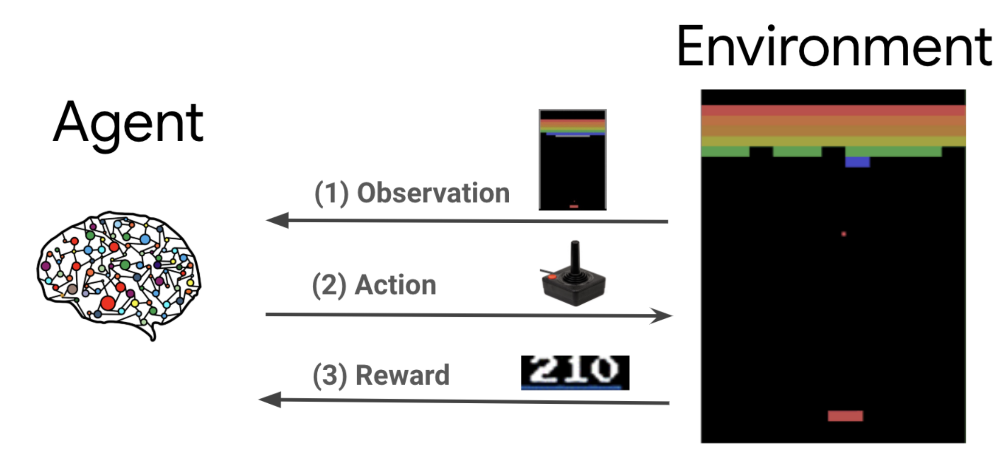
Fig. 4.1 Atari game agent. Environment and observation-react loop. Credit.#
Goal of the agent. Maximize the accumulated rewards over time. In other words, the agent must optimize the reward function (something similar to the MC-agent explained in the previous topic). However, herein such a maximization leads to learn a policy (a guide to interact with the environment).
Policy. Maps every possible state to the probabilities of choosing different actions. This helps not only to guide the agent through the environment but to maximize the cumulative reward.
Therefore, the agent is basically a learning algorithm. Reiforcement Learing is the paradigm that leads to learn optimal policies.
4.2. Markov Decision Processes#
4.2.1. Motivation#
In “Distrinite Mathematics” (Matemática Discreta) we studied Markov Chains in an abstract way. Basically it is worth to remember a couple of concepts:
State transitions. Markov Chains are encoded by transition matrices which declare the probability \(p(s'_{t+1}|s_t)\), i.e. the probability of making a transition from state \(s\) to state \(s'\) in time \(t\). Both states belong to the “state space” \({\cal S}\).
Markov property. The probability \(p(s'_{t+1}|s_t)\) at time \(t\) is “memoryless”, i.e. the conditional probability forgets what happened before \(t\):
Markov Decision Processes (MDPs) incorporate two new elements to the Markov machinery:
Actions. The definition \(p(s'_{t+1}|s_t)\) is incomplete. The word “Decision” in MDPs means that such a probability can be different for any of the available/legal actions \(a\) belonging to the “action space” \({\cal A}\). In other words, the correct definition is
where we drop the time indexes for the sake of simplicty. As we will see shortly, \(p(s'|s,a)\) implies that every action has its own transition matrix.
Rewards. Reaching the state \(s'\) via any action \(a\) implies receiving a (numerical)”reward” \(R(s,a)\) which can be positive, negative or zero.
In order to motivate MDPs, we use the service-dog problem. This is a classic example. Herein we loosely follow the book The Art of Reinforcement Learning (available in Springer via UA library).
In Fig. 4.2, we illustrate a basic setup for the service-dog problem.
Our objective is to train a dog that lies outside to find an object (which is in room 3).
The topology of the setup shows that the dog can only access to the building via room 2 and then either go to room 1 or room 3 (where the object is).
Once the object is found, the dog stays in room 3.
{kind=link}
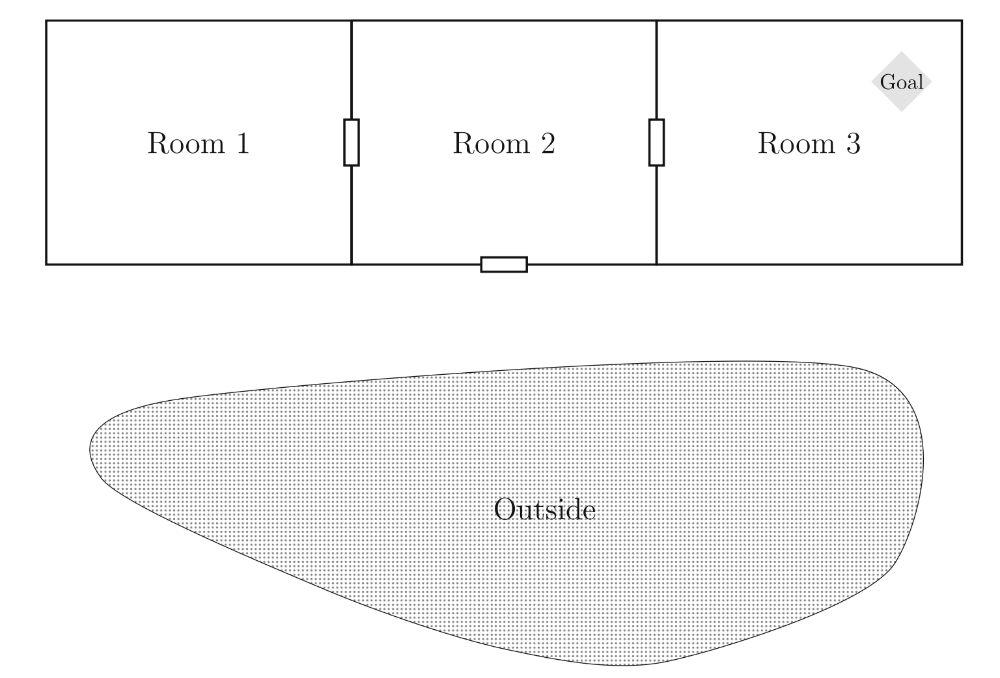
The states are:
Instead of having a “unique” graph encoding the transitions and their probabilities, we do have a “graph per action”. We consider the following actions”:
In Fig. 4.3, we show the transition matrices for the six actions. For instance:
{kind=link}
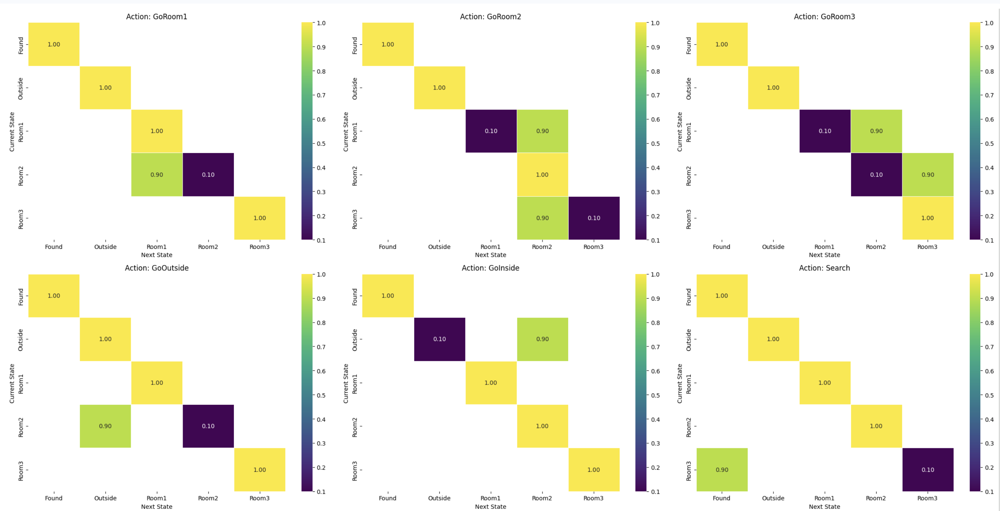
Fig. 4.3 Transition matrices for service-dog actions. Created by Gemini.#
GoRoom3. This room can only be accesed from room 2. Therefore, under this action there is a probability of \(0.9\) to stay in room 2 and only \(0.1\) to go towards to room 1. However, there is a probability \(0.1\) to stay in room 2 and \(0.9\) to go to room 3. This shows the “intentionality” of the agent to approach the goal. In addition, when applied to any other state, the agent stays in that state with probability \(1.0\).
GoRoom2 follows a similar logic. It opens the possibility to go to room 1 or room3 but it is biased towards room 3.
GoRoom1 is obviously biased towards returning to room 2 since this is key to access room 3. However, when the agent is at room 3 we introduce a large bias to return to room 2.
GoOutside. This can only be done from room 2 and we prefer this because the dog can play outside.
GoInside. We incentivate the dog to go to room 2 because we want to teach him how to reach the goal.
Search. This action is really simple: once the dog is in room 3 it has a \(0.9\) probability of founding the item, thus reaching the goal.
In Fig. 4.4, we combine all the transition matrix in a unique graph. Try the isolate the graph of one of the “actions”.
{kind=link}
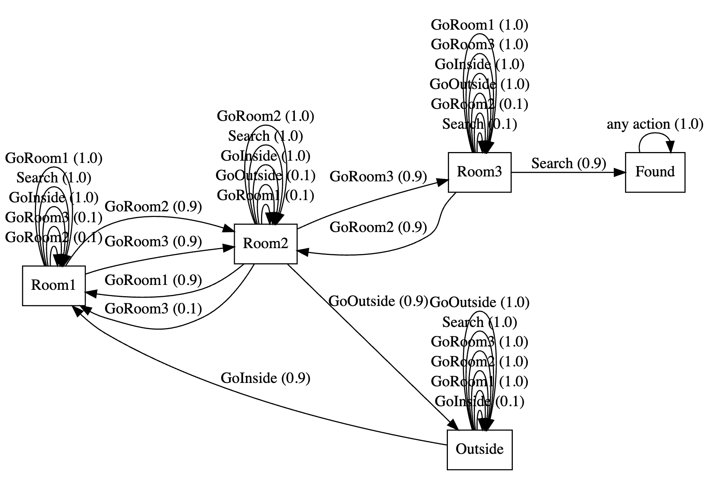
Fig. 4.4 Superposed graph considering all transition matrices. Created by Gemini.#
As you can see, in RL actions do not refer (in general) to atomic predicates but to stategies (or “behaviors” in the autonomous robots jargon).
Concering rewards. If we want to incentivate the dog to seach the item instead of playing indefinitely in the garden, we may use the following individual “state-action rewards”:
Room1:
GoRoom1: {'Room1': -1.0}
GoRoom2: {'Room2': -1.0}
GoRoom3: {'Room3': -1.0}
GoOutside: {'Outside': -1.0}
GoInside: {'Room1': -1.0}
Search: {'Room1': -2.0}
Room2:
GoRoom1: {'Room1': -1.0}
GoRoom2: {'Room2': -1.0}
GoRoom3: {'Room3': -1.0}
GoOutside: {'Outside': -1.0}
GoInside: {'Room1': -1.0}
Search: {'Room2': -2.0}
Room3:
GoRoom1: {'Room1': -1.0}
GoRoom2: {'Room2': -1.0}
GoRoom3: {'Room3': -1.0}
GoOutside: {'Outside': -1.0}
GoInside: {'Room1': -1.0}
Search: {'Found': 10.0}
Outside:
GoRoom1: {'Room1': -1.0}
GoRoom2: {'Room2': -1.0}
GoRoom3: {'Room3': -1.0}
GoOutside: {'Outside': -1.0}
GoInside: {'Room1': -1.0}
Search: {'Outside': -2.0}
Found:
GoRoom1: {'Found': 0.0}
GoRoom2: {'Found': 0.0}
GoRoom3: {'Found': 0.0}
GoOutside: {'Found': 0.0}
GoInside: {'Found': 0.0}
Search: {'Found': 0.0}
The reward function \({\cal R}\) maps pairs of states and actions to numerical values \(R(s,a)\). Since the agent tands to take actions that maximize the rewards, we have:
For \(\text{Room1}\) and \(\text{Room2}\), the agent is incentivated to leave the room and not to search (rewards \(-1\) and \(-2\) respectively).
For \(\text{Room3}\), there is a high positive reward for searching (\(+10\) units).
For \(\text{Outside}\), the dog is incentivated to go inside and not to search.
For \(\text{Found}\) there is a neutral incentivation (reward \(0\)). This is typical of a final state.
4.2.2. Future Return#
Suppose that we perform several episodes. An episode is a sequence of legal (non-zero transition probabilities in the respective action transition matrices) pairs of state-action. In the table below, we show a couple of episodes of \(6\) movements each:
\( \begin{aligned} &\begin{array}{cccc} \text{Episode} & t & \text{Pair} & R_t = R(s,a)\\ \hline 1 & 0 &(\text{Outside},\text{GoOutside}) & -1\\ & 1 &(\text{Outside},\text{GoRoom2}) & -1\\ & 2 &(\text{Room2},\text{GoRoom2}) & -1\\ & 3 &(\text{Room2},\text{GoRoom3}) & -1\\ & 4 &(\text{Room3},\text{Search}) & 10\\ & 5 &(\text{Found},\text{GoRoom3}) & 0 \\ \hline 2 & 0 &(\text{Outside},\text{GoRoom2}) & -1\\ & 1 &(\text{Room2},\text{GoRoom1}) & -1\\ & 2 &(\text{Room1},\text{GoRoom1}) & -1\\ & 3 &(\text{Room1},\text{GoRoom1}) & -1\\ & 4 &(\text{Room1},\text{GoRoom2}) & -1\\ & 5 &(\text{Room2},\text{Search}) & -2\\ \end{array} \end{aligned} \)
The return \(G_t\) for an episode is defined as follows
where \(\gamma \in (0,1)\) is a “discount factor” just to avoid “infinite returns” (indefinitely adding negative rewards). In other words, the weight of a given return decays with time.
Then, for episode 1 we have the following return
For \(\gamma=0.9\), we have:
Similarly, for episode 2, we have
This second episode returns a smaller reward since in the “horizon” of \(6\) time steps, the agent (1) loops in room 1 and then performs a search in the wrong room (room 2).
4.2.3. Value Function#
Consider the following property of \(G_t\):
In other words, future returns are computed by the inmediate return at \(t\) plus the discount of the future return from \(t+1\) onwards.
Although this recursion is intriguing, comparing future returs for deciding what state is more valuable for maximizing the total return is time dependent (the evaluation depends on the chosen \(t\)). We need a measure which is state-dependent instead. This is the value function.
Value function Given a state \(s\), its value function \(V(s)\) accounts from the expected reward from it, defined as follows:
or, more precisely
Herein, “expectation” relies on incorporate the probabilities \(p(s'|s,a)\) and the sum over all actions. The above equation is known as the Bellman Equation. This indicates a close link with Dynamic Programing (DP).
Of course, Bellman Equation is recursive. If so, how do we really compute \(V(s)\)? As in DP, we are going to do it iteratively:
Let us assume that \(V(s)=0\) for all \(s\in{\cal S}\) initially.
Next, in the next iteration let us take the value function provided by the most successful action:
Then, for each new \(V(s)\) get the increment \(\delta\) in absolute value and take the maximum of all these absolute values.
If such maximum is below a given \(\epsilon\), declare convergence and stop!
This algorithm (which is not unique) is called the value iteration:
Algorithm 4.1 (Value-Iteration)
Inputs Given \(\gamma\) and tolerance \(\epsilon\)
Output \(V(s),\forall s\in {\cal S}\).
Initialize: \(V(s)=0,\forall s\in {\cal S}\)
while \(\neg\)convergence:
\(\delta = 0\)
for \(s\in {\cal S}\):
\(v=V(s)\)
\(V(s) = \max_{a}\left[R(s,a) + \gamma\sum_{s'\in {\cal S}}p(s'|s,a)V(s')\right]\)
\(\delta = \max (\delta, |v - V(s)|)\)
if \(\delta <\epsilon\) then break
return \(V(s),s\in {\cal S}\)
4.2.4. Optimal Policy and Optimal Value#
The Value-Iteration does not only provides \(V(s)\) but \(V_{\ast}(s)\) the optimal \(V(s)\). Why?
Firstly, note that the Bellman Equation sums over all actions and then weigths the existing values by the states conditioned on the probabilities of such actions. This is something similar to
where \(V^0(s)=0,\forall s\in {\cal S}\).
However, the Bellman Equation (which is aligned with the optimality principle of DP) retains only the best value of each iteration, i.e. the one coming for taking the best action:
Note that at each iteration we consider the best action for each state. This sounds very “deterministic” here, but in general each state \(s\) has associated an unknown probability distribution \(\pi(a|s)\) determining the chance that an action \(a\) is taken at state \(s\). Such a mapping is a policy.
Note that
Actually, the function \(V(s)\) is heavily dependent on the policy followed. We denote this by rewriting the Bellman Equation as follows:
which returns the value for \(s\) following the policy \(\pi\).
Optimal Policy. A policy \(\pi\) is optimal (and we denote it by \(\pi_{\ast}(a|s)\)) if it satisfies:
From the above formula, it is quite evident that the optimal policy \(pi_{\ast}\) is derived as soon as we now the optimal value \(V_{\ast}\). This is done in the following algorithm:
Algorithm 4.2 (Optimal-Policy)
Inputs Given optimal value \(V_{\ast}(s),\forall s\in{\cal S}\).
Output \(\pi_{\ast}(a|s),\forall s\in {\cal S}\).
for \(s\in {\cal S}\):
\(a_{\ast}=\arg\max_{a\in{\cal A}}\left[R(s,a) + \gamma\sum_{s'\in {\cal S}}p(s'|s,a)V_{\ast}(s')\right]\)
for \(a\in {\cal A}(s)\):
if \(a=a_{\ast}\):
then \(\pi(a|s)=1\) else \(\pi(a|s)=0\)
return \(\pi\)
Application to service dog. Given the above setting, the optimal values and policies are the following (the convergence is fast):
Optimal Value Function (V*):
State Optimal Value
0 Room1 6.955562
1 Room2 7.814274
2 Room3 9.890110
3 Outside 6.955562
4 Found 0.000000
Optimal Policy (π*):
State Optimal action
0 Room1 GoRoom3
1 Room2 GoRoom3
2 Room3 Search
3 Outside GoInside
4 Found GoRoom1
Optimal values. First of all, note that the value functions are quite illustrative of how promising is to reach the objective from any state: \(6.9\) from room 1, \(7.8\) from room 2 and \(9.8\) from room 3. Observe that the value for oustide (\(6.9\)) is equal than that for room 1, indicating that these states are equally far from promising the target. Finally, once the target is reached, the value is \(0\).
Optimal Policy. In In Fig. 4.5, we show the probabilities that lead to the optimal policy, together with their corresponding best action.
{kind=link}
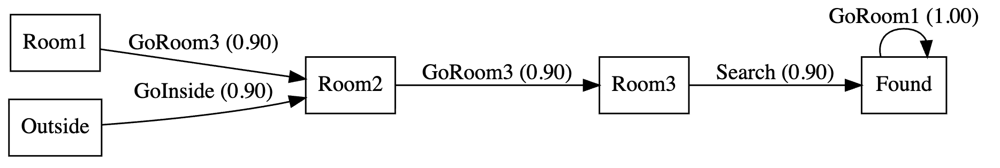
Fig. 4.5 Graph of the optimal policy for the service-dog problem. Created by Gemini.#
4.3. Monte Carlo MDPs#
DP-like Reinforcement Learning assumes that the agent has full access to a model of the environment. Such a model (rewards and transition probabilities) is specified by the Bellman Equation.
However, in environments with a larger number of states and/or actions, it is quite difficult to specify all the rewards and the state transitions. Even when this is possible, the evaluation of the Bellman Equation for each state is very time consuming.
The Grid Problem. Consider the \(5\times 5\) 2D grid in Fig. 4.6. We have:
A target state \((4,4)\) with a reward \(+10\) and a penalty/pit state \((2,2)\) with reward \(-10\).
The catalog of actions is quite simple
where \(\text{Up}=(1,0)\) increases the row index, \(\text{Down}=(-1,0)\) decreases it, \(\text{Left}=(0,-1)\) decreases the column index and, finally, \(\text{Right}=(0,1)\) increases it.
Concerning action rewards, applying any action (except where the destination is the target or the pit) has a reward \(-1\) forcing the agent to consume as few actions as possible.
{kind=link}
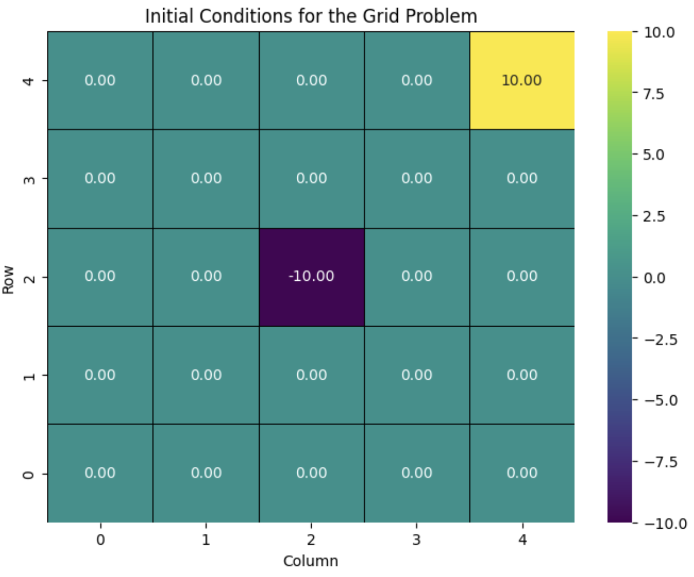
Fig. 4.6 Grid2D Problem with final and pit states. Created by Gemini.#
In this particular setting, approaching the diagonal leads to a sub-optimal reward from \((0,0)\). Therefore, it is not a good idea to use \(\text{Up}\) and \(\text{Right}\) alternatively in this case.
Remember also, that solving a RL problem involves computing \(V_{\ast}(s)\) for all states \((i,j), i,j=0,\ldots,4\). Herein, we have a quadratic mumber of states and the computation of \(V_{\ast}(s)\) using Value-Iteration is also quadratic (linear per iteration with the number of states which is quadratic). This may be not assumible for larger grids.
4.3.1. Future Rewards#
Monte Carlo MDPs collect several episodes of state-action-state and their corresponding rewards and take their average as a means to learn-by-experience.
Each episode have the following shape:
where \(T\) is the maximum time of the episode since the episode ends (or it is “done”) either if the pit or the target states are reached.
Future rewards: At each episode, the future rewards are computed backwards as follows:
In order to save evaluation time, in Firs-visit Monte Carlo MDPs, future rewards are only evaluated at the first time each state \(s_i\) is visited, i.e. included in a triplet \((s_t, a_t, r_{t+1})\) of the episode.
If the state \(s\) appears in \(N_{s}\) episodes, its global future rewards is the average:
where \(G(s,e)\) refers to the future value of \(s\) at the episode \(e\) (the first time it appears, if we follow the firs-time strategy).
4.3.2. \(\epsilon-\)Greedy Policy#
Concerning the value function, as its computation depends on the choice of a set of actions, we assume that the learner follows a given policy \(\pi\).
Remember that \(V_{\pi}\) is the value obtained by following a policy \(\pi\). Using the Bellman Equation, we have:
where \(Q_{\pi}(s,a)\) is the Q-value for action \(a\) and state \(s\).
However, in Monte Carlo (which is model free) we cannot estimate \(Q_{\pi}(s,a)\) using the Bellman Equation. Instead, the policy can be decided on-the-fly.
In the \(\epsilon-\)Greedy Policy we define the policy as follows:
where:
\(Q_{\pi}(s,a)\) are proposed by the Markov MDP.
\(\epsilon\in [0,1]\) defines the probability of taking a random action from state \(s\), where \({\cal A}(s)\) is the set of legal actions one can take from this state and \(|{\cal A}(s)|\) the number of these legal actions.
If \(\epsilon = 0\), the agent selects the (so-far) optimal policy with probability \(1\).
If \(\epsilon = 1\), the agent selects either the so-far optimal optimal policy or any other with probability \(\frac{1}{|{\cal A}(s)|}\).
Let us define the \(\epsilon-\)Greedy Policy Algorithm
Algorithm 4.3 (Epsilon-Policy)
Inputs Current state \(s\), Q-values, \(Q_{\pi}(s,a)\), \({\cal A}(s)\), \(\epsilon\).
Output Estimated Optimal action \(a^{\ast}\).
if \(\text{random}(0,1)<\epsilon\) then:
# Exploration: Choose a random action:
return \(\text{randomChoice}({\cal A}(s))\)
else:
# Exploitation: Choose arg-max action:
\(\text{max_q} = -\infty\)
\(\text{best_actions} =\emptyset\)
for \(a\in {\cal A}(s)\), \(q\in Q_\pi(s,a)\):
if \(q>\text{max_q}\):
then \(\text{max_q}=q\), \(\text{best_actions}=\{a\}\)
else if \(q==\text{max_q}\):
then \(\text{best_actions}=\text{best_actions}\cup \{a\}\)
return \(\text{randomChoice}(\text{best_actions})\)
Let us now integrate the above algorithm with a global Monte Carlo MDP.
Algorithm 4.4 (Epsilon-Policy-Q)
Inputs Episodes \(K\), times per episode \(T\)
Output \(\epsilon-\)Greedy \(Q_{\pi\ast}\)
Initialize. \(i=0\), \(Q_{\pi}(s,a)=0\), \(N(s,a)=0\), \(G(s,a)=0\) \(\forall s\in {\cal S}, a\in {\cal A}\).
for episode \(i\):
Select initial state \(s_0\)
\(\text{history}=\emptyset\)
for \(t=\{1,\ldots,T\}\)
\(a_{t-1} = \text{Epsilon-Policy}\)(\(s_{t-1}\), \(Q_{\pi}(s_{t-1},a_{t-1})\), \({\cal A}(s_{t-1})\), \(\epsilon\))
Make triplet \((s_{t-1},a_{t-1},r_t)\)
\(\text{history} = \text{history}\cup \{(s_{t-1},a_{t-1},r_t)\}\)
\(G=0\)
\(\text{visited_state_actions}=\emptyset\)
for \(t\in\text{reversed}(\text{history})\):
\((s_{t-1},a_{t-1},r_t) = \text{history}[t]\)
\(G = r_t + \gamma * G\)
if \((s_{t-1},a_{t-1})\not\in \text{visited_state_actions}\)
then
\(\text{visited_state_actions} = \text{visited_state_actions}\cup (s_{t-1},a_{t-1})\)
\(G(s_{t-1},a_{t-1}) = G(s_{t-1},a_{t-1}) + G\)
\(N(s_{t-1},a_{t-1}) = N(s_{t-1},a_{t-1}) + 1\)
\(Q_{\pi}(s_{t-1},a_{t-1})= \frac{G(s_{t-1},a_{t-1})}{N(s_{t-1},a_{t-1})}\)
\(i = i + 1\)
return \(Q_{\pi\ast}\)
\(\text{Epsilon-Policy}\) is a subroutine of \(\text{Epsilon-Policy-Q}\). Actually, for each episode we:
Select an initial state \(s_0\) to start the episode. As the action corresponding to this state is unknonw and it has to be determined by the \(\epsilon-\)Greedy method, we call \(\text{Epsilon-Policy}\) to get such action \(a_{0}\). This leads to the first reward \(r_1\) and the first triplet \((s_0,a_0,r_1)\) is added to the \(\text{history}\) of the episode. The for loop in line \(2.3\) runs until the history for this episode is completed and all the \(\epsilon-\)Greedy actions are included therein.
Evaluate the Future Rewards. Once we have the history of the episode, we can proceed to compute the future rewards as specified in the Monte Carlo MPD. However it is worth to invert time in the sequence since \(G(s_t)=r_{t+1} + \gamma G(s_{t+1})\).
First-visit and \(Q\) update. If the pair \((s_{t-1},a_{t-1})\) appears from the first time in the time-reversed history of the episode, it is time to update the number of total times it appears and the variable \(G(s_{t-1},a_{t-1})\) which accumulates the future rewards. The variable \(Q_{\pi}(s_{t-1},a_{t-1})\) results for an obvious ratio. Note that herein we do not use the Bellman Equation.
Given the \(Q_{\pi}(s,a),\forall s\in{\cal S}, a\in{\cal A}\), we store in each \(s\) the maximum value of \(Q_{\pi}(s,a)\) for any action \(a\). We show the result in Fig. 4.7:
{kind=link}
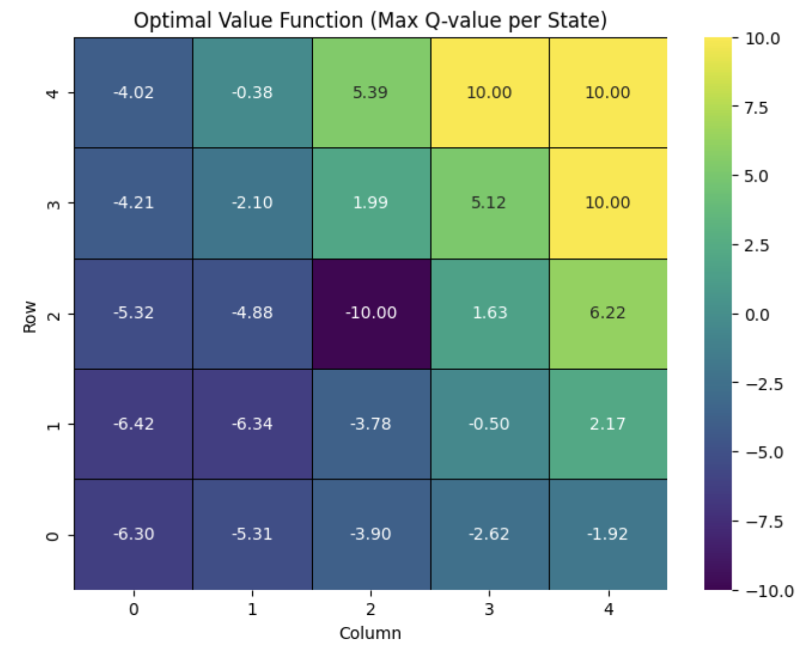
Fig. 4.7 Optimal Q-values for Grid2D Problem with final and pit states. Created by Gemini.#
Once we have “approximated” \(Q_{\pi}\) it is trivial to compute \(\pi(a|s)\) as in
The optimal policy with this \(\epsilon\) method is shown in Fig. 4.8:
{kind=link}
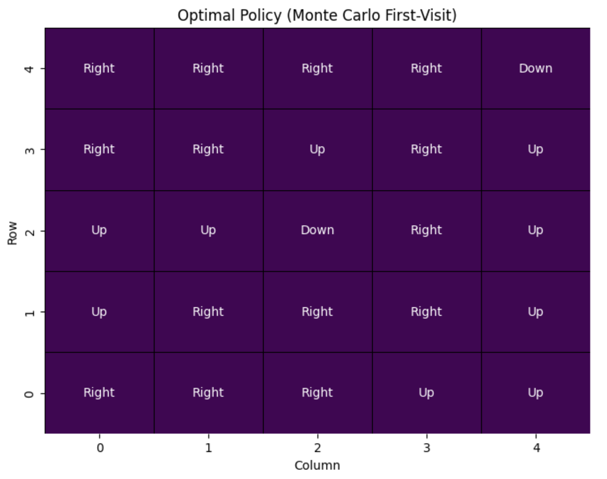
Fig. 4.8 \(\epsilon-\)Greedy Policy for Grid2D Problem with final and pit states. Created by Gemini.#
Basically, the \(\text{Epsilon-Policy-Q}\) algorithm builts the optimal policy in a greedy way that improves a simple random policy \((\epsilon=1)\). In addition, the agent is learning from its experience due to the Monte Carlo process where the \(\epsilon-\)Greedy policy estimation is embedded!
4.3.3. Exploration vs Exploitation#
Note that in the \(\text{Epsilon Policy-Q}\) algorithm, we call the \(\text{Epsilon Policy}\) subroutine in order to select an action. However, the resulting best action (so far) depends on \(Q_{\pi}\), which is unknonwn in the early stages of \(\text{Epsilon Policy-Q}\). As the Monte Carlo MDP builds up \(Q_{\pi}\), the actions are more and more informative.
Indeed, for a given \(Q_{\pi}\) the call to \(\text{Epsilon Policy}\) relies on a fixed \(\epsilon\) which declares how “random” the choice can be. However, as the obtained action is more and more informative as the MDP goes on, it makes sense to update \(\epsilon\) to have an impact on
We seek a trade-off between:
Exploration. We start by a high value of \(\epsilon\) (more random when there is less knowledge of\(Q_{\pi}\)).
Exploitation. As \(Q_{\pi}\) emerges, we exploit it to make better and better (more informed) decisions. This is associated with decreasing vaiues of \(\epsilon\).
In Fig. 4.9 we show the accumulated reward per stage as we modify \(\epsilon\) as follows:
where \(\epsilon_{min}=0.01\) is the minimum (less random) achievable \(\epsilon\), \(\epsilon_{decay}=0.999\) is the decay factor and \(\epsilon^{0}=1\). This reminds us the temperature scheduling during annealing.
{kind=link}
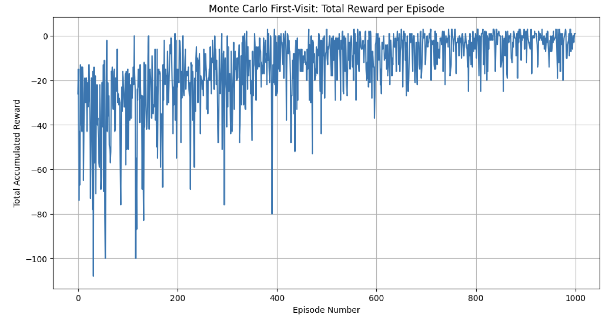
Fig. 4.9 Total accumulated reward for a dynamic \(\epsilon\).#
How can we analyze the above figure?
Initial Exploration. Note that at the early stages (0-200), the cumulative reward is very random (large oscillations along time), low, and even negative. The agent is trying many random actions which usually leads to fall in penalizing states or choosing long paths to reach the target. Large oscillations show that the agent is just “probing” or “sensing” the environment
Transition. At the mid stages (200-700), as epsilon decays the agent reduces its exploration and favors actions that, according to a more informed \(Q_{\pi}\), seem more promising in terms of cumulative rewards. Although there are still oscillations, the cumulative rewards increase on average. This shows that the agent is “discovering” and “reinforcing” the most efficient paths and/or avoiding penalizing states.
Exploitation. Close to the end of training (700-1000), \(\epsilon\) approaches its minimal value (0.01). In this stage, the agent mainly exploits the knowledge it has, i.e. the \(Q_{\pi}\). As a result, there is an stabilization of the cumulative reward in high values. In this case, the consistent peaks around \(+3\) (+10 reward for reaching the target and -1 per each of the typically 7 steps to reach it) show that the agent follows an optimal policy by the end of the training.
4.4. Temporal Difference and SARSA#
Monte Carlo MDPs are ideal free-model strategies for “episodic environments” (where there are well defined steps), but they are not suitable for continuing learning (there is no natural ending of the task).
In addition, Monte Carlo MDPs impose the update of the value function at the end of each episode.
Temporal Difference (TD) solves these two problems by updating incrementally their values by following this well-known formula:
where \(\text{Target}\) is \(G_t\) which leads to
and \(\alpha\) (hyper-parameter) is the step-size or “learning rate”. This parameter replaces \(1/N(S_t)\) since in TD we do not count \(N(S_t)\).
Note that for the estimation of \(V_{\pi}(S_t)\) we need tuples \((s,a,r',s')\), where both \(r'\) and \(s'\) refer to \(t+1\) (reward and state after applying action \(a\)).
State-Action-Reward-State-Action (SARSA). SARSA is an extension of considering tuples \((s,a,r',s')\) to tuples \((s,a,r',s',a')\).
Actually, the SARSA’s update rule is
Algorithm 4.5 (SARSA)
Inputs Episodes \(K\), times per episode \(T\), \(\alpha\) learning rate, \(\epsilon_{min}\), \(\epsilon_{decay}\)
Output \(\epsilon-\)Greedy SARSA \(Q_{\pi\ast}\)
Initialize. \(i=0\), \(Q_{\pi}(s,a)=0\), \(N(s,a)=0\), \(\forall s\in {\cal S}, a\in {\cal A}\), \(\epsilon=1\).
for episode \(i\):
\(\text{current_s} = \text{Select_Initial_State()}\)
\(a_{t-1} = \text{Epsilon-Policy}\)(\(\text{current_s}\), \(Q_{\pi}\), \({\cal A}(\text{current_s})\), \(\epsilon\))
for \(t=\{1,\ldots,T\}\)
Make \((s_{t-1},a_{t-1},r_t)\rightarrow s_t\)
\(a_{t} = \text{Epsilon-Policy}\)(\(s_{t}\), \(Q_{\pi}\), \({\cal A}(s_{t})\), \(\epsilon\))
\(\text{old_q}=Q_{\pi}(s_{t-1},a_{t-1})\)
if \(\text{done}(s_{t})\):
then \(\text{target_q}=r_t\)
else \(\text{target_q}=r_t + \gamma\cdot Q_{\pi}(s_t,a_t)\)
\(Q_{\pi}(s_{t-1},a_{t-1}) = \text{old_q} + \alpha\cdot(\text{target_q} -\text{old_q})\)
\(\text{Update}:\) \(\text{current_s} = s_{t}\), \(a_{t-1} = a_{t}\)
\(\epsilon = \max(\epsilon_{min}, \epsilon\cdot \epsilon_{decay})\)
\(i = i + 1\)
return \(Q_{\pi\ast}\)
Some precisions about the above algorithm:
Episodes?. Although we follow the episodic structure of the Monte Carlo algorithm, herein episodes are only used to find an initial state to follow (such as a trajectory). Note that just before the end of each “episode” we update the \(\epsilon\). Therefore, the process can be seen as \(K\) stages or epochs, each one with \(T\) steps, of a continuing learning algorithm. But, conceptually \(K\) can be unbounded.
Tuples. The SARSA algorithm just builds tuples \((s,a,r,s',s')\) to update \(Q_{\pi}(s_{t-1},a_{t-1})\), i.e. \(Q_{\pi}(s,a)\) from old \(Q_{\pi}(s,a)\) and new \(Q_{\pi}(s',a')\). This is why we need two calls to \(\text{Epsilon-Policy}\) (one for \(a_{t-1}\) and another for \(a_{t}\)). Finally, the \(\text{done}(s_{t})\) function just stops if we hit a target state or a penalizing state.
Online learning. SARSA does not need to end an episode to get an estimation of \(Q_{\pi}\). The update is done as soon as the information is available. This means “online” and this strategy is also useful for non-episodic (more realistic) problems.
In Fig. 4.10 we show the maximum values of \(Q_{\pi\ast}\) for the SARSA algorithm where we have: \(K=1000\), \(T=100\), \(\alpha = 0.1\), \(\gamma = 0.9\), \(\epsilon = 1.0\), \(\epsilon_{min}=0.01\) and \(\epsilon_{decay}=0.995\).
{kind=link}
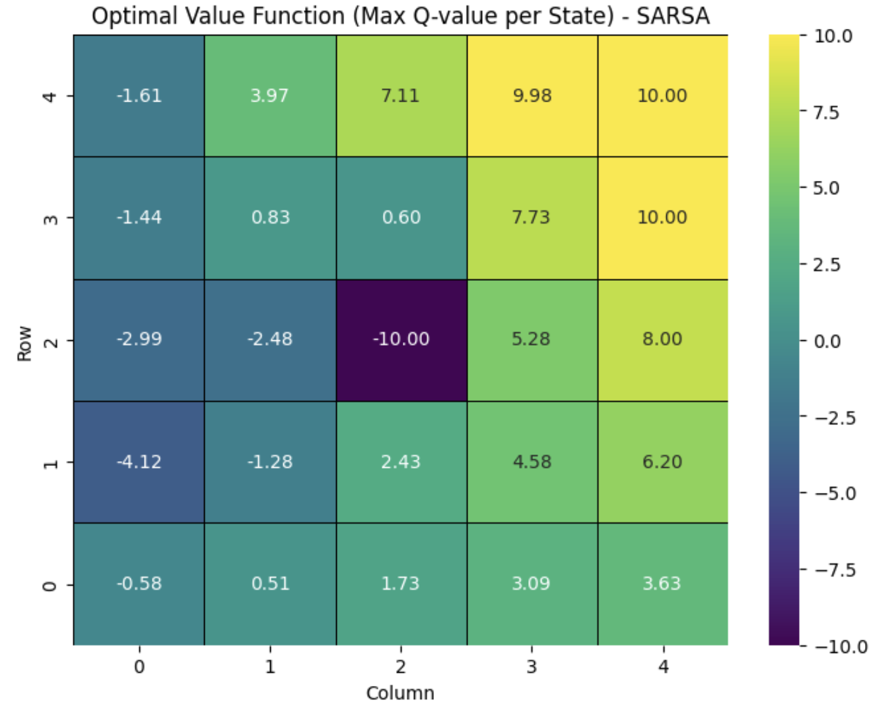
Fig. 4.10 Optimal Q-values for Grid2D Problem with final and pit states for SARSA. Created by Gemini.#
4.5. On-Policy vs Off-Policy#
SARSA is an on-policy algorithm since:
It uses actions that are really selected by the agent’s policy (e.g. \(\epsilon-\)greedy).
SARSA learns \(Q_{\pi}\) from the policy \(\pi\) that the agent is really following, including his exploration behavior
As a result, SARSA looks for the optimal policy considering the agent’s exploration.
On-Policy strategies may lead to very conservative policies in dangerous environments (since it penalizes the high-risky states, even if the optimal path goes through them).
Off-policy exploration, however, is an strategy where the behavior policy and the target policy are different.
Off-policy reinforcement learning algorithms are often more powerful because they can use experience generated by a different behavior policy, which may be more exploratory than the target policy.
Summarizing: On-policy is learing from what I do whereas Off-policy is learning from what others do.
4.6. Q-Learning#
Q-Learning is a TD algorithm and it is the most used Off-policy algorithm. It learns the optimal policy independently of the agent’s behavior. How?
In SARSA, we follow the updating rule
However, in Q-Learning we do
where we highlight (in bold type) the differences:
On-Policy. SARSA is On-Policy because action \(a_{t+1}\) is selected from an \(\epsilon-\)greedy policy which is the *same than the one used for selecting \(a_{t}\).
Off-policy. Q-Learning is Off-Policy because the action \(a_{t+1}\) (i.e. \(a'\)) is the one that maximizes \(Q_{\pi}\) for \(s_{t+1}\). In other words, it is independent from the choice of \(a_{t}\) which (typically) relies on an \(\epsilon-\)greedy policy.
In other words, Q-Learning operates on the best possible target even if this action has not been taken by the current policy.
Algorithm 4.6 (Q-Learning)
Inputs Episodes \(K\), times per episode \(T\), \(\alpha\) learning rate, \(\epsilon_{min}\), \(\epsilon_{decay}\)
Output \(\epsilon-\)Greedy Q-Learning \(Q_{\pi\ast}\)
Initialize. \(i=0\), \(Q_{\pi}(s,a)=0\), \(N(s,a)=0\), \(\forall s\in {\cal S}, a\in {\cal A}\), \(\epsilon=1\).
for episode \(i\):
\(\text{current_s} = \text{Select_Initial_State()}\)
for \(t=\{1,\ldots,T\}\)
\(a_{t-1} = \text{Epsilon-Policy}\)(\(\text{current_s}\), \(Q_{\pi}\), \({\cal A}(\text{current_s})\), \(\epsilon\))
Make \((\text{current_s},a_{t-1},r_t)\rightarrow s_t\)
\(\text{old_q}=Q_{\pi}(s_{t-1},a_{t-1})\)
if \(\text{done}(s_{t})\):
then \(\text{max_q}=0.0\)
else \(\text{max_q}= \max_{a'} Q_{\pi}(s_t,a')\)
\(Q_{\pi}(s_{t-1},a_{t-1}) = \text{old_q} + \alpha\cdot(r_t +\gamma\cdot\text{max_q} -\text{old_q})\)
\(\text{Update}:\) \(\text{current_s} = s_{t}\)
\(\epsilon = \max(\epsilon_{min}, \epsilon\cdot \epsilon_{decay})\)
\(i = i + 1\)
return \(Q_{\pi\ast}\)
where there is no a double loop and the variable \(\text{max_q}\) replaces \(\text{target_q}\) in SARSA, showing clearly that both come from potentially different policies.
In Fig. 4.11 we show the maximum values of \(Q_{\pi\ast}\) for the SARSA algorithm where we have: \(K=1000\), \(T=100\), \(\alpha = 0.1\), \(\gamma = 0.9\), \(\epsilon = 1.0\), \(\epsilon_{min}=0.01\) and \(\epsilon_{decay}=0.995\).
{kind=link}
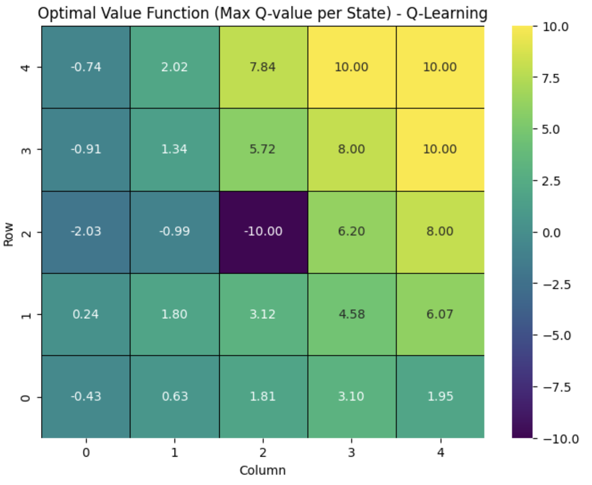
Fig. 4.11 Optimal Q-values for Grid2D Problem with final and pit states for Q-Learning. Created by Gemini.#
In comparison with SARSA:
Q-Learning produces higher values for the optimal Q as the agent is closer to the target, and smaller ones at states far from the target. As we are maximizing the total reward, target states (and/or states with high reward) become attractors.
Q-Learning gives higher values than SARSA to states close to ‘dangerous’ (low-reward) states. A metaphor of this is walking through close to a cliff.
In other words, Q-Learning is eager than SARSA which is more convenient when the agent has to avoid dangerous (low-reward) states.
Global Comparison. In Fig. 4.12 we compare the evolution of the cumulative rewards for Monte Carlo, SARSA and Q-Learning. Note that TD strategies such as SARSA and Q-Learing do have lower variance in the y-axis wrt Monte Carlo. In addition, they converge faster than Monte Carlo.
{kind=link}
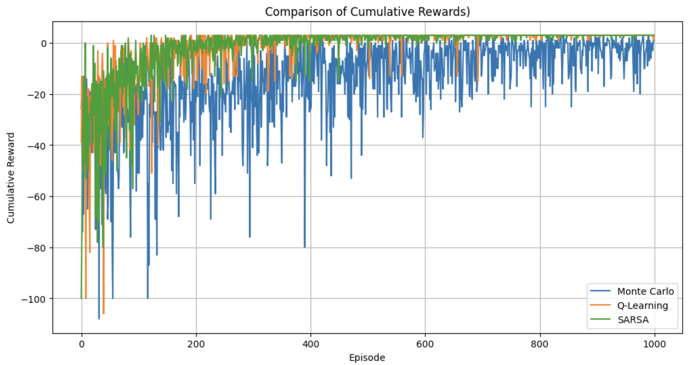
Fig. 4.12 Total accumulated rewards for a dynamic \(\epsilon\). Comparing Monte Carlo, SARSA and Q-Learning.#
4.7. Deep Q-Learning#
4.7.1. The Big Picture#
Let us replace the classical Q-Learning equation
by finding a Neural Network (parameterized by \(\Theta\)) that minimizes
where \(\hat{Q}\) are the parameterized version of \(Q\) according to \(\Theta\). In other words, Deep Q-Learning relies on finding optimal Q-Learning updates according to mimimize the difference between the current and targe policy.
How do we feed the NN?. Instead of feeding the NN via pairs \((s,a)\) it seems more convemient to use \(s\) as input and place the \(\hat{Q}_{\pi}(s,a_i;\Theta)\) in the output layer. In this way, we learn to adjust \(\Theta\) to minimize \(J(\Theta)\) by reducing the disparities between what does the NN expects from a given \(\Theta\) and what it must really statisfy. We summarizde this I/O mapping in Fig. 4.13.
Obviuosly, the reference values are provided by something like an \(\epsilon-\)greedy policy.
{kind=link}
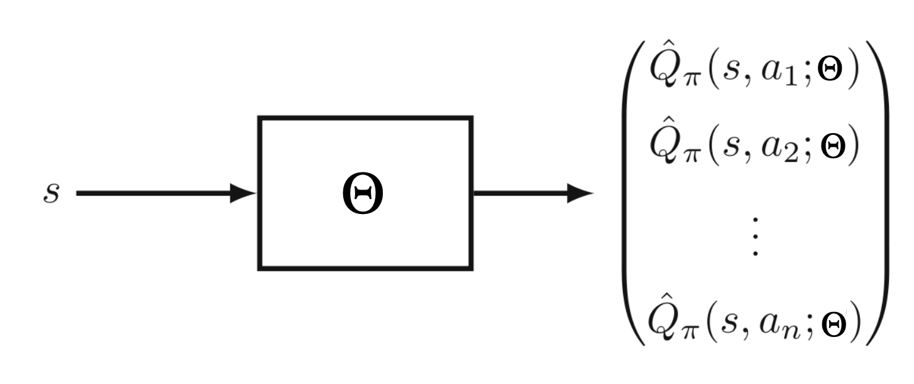
Fig. 4.13 Feeding a NN in Deep Q-Learning. Adapted from The Art of Reinforcement Learning.#
4.7.2. Image-based inputs#
NNs are effective when dealing with high-dimesional input spaces such as images. Although this is not the case of typical RL problems (service dog, grid2D, taxi, cart pole) where we take low-dimensional samples such as \((s,a,r,s')\) or \((s,a,r,s',a')\).
However, in more realistic RL problems such as Atari games (shown in the intro to this topic) you have a complex environment or state representation. For instance in Fig. 4.1 a picture captures the paddle’s position, the ball’s position and the location of the (surviving) top bricks for Atari Breakout.
In this regard, a snapshot (image) is a good description of the state \(s\). However there are some pre-processing to do:
Grayscale. In many games, such as Atari Breakout, color information is not relevant and can be discarded.
Reshape. If we want to leverage the power of Convolutional Networks (CNNs) it is convenient to transform the (original) rectangular images into square ones.
4.7.3. Ensure Markov property#
Remember that one of the key pre-conditions for RL (seen as a MDP) is that the implicit chain of successive states must satisfy the Markov Condition: \(p(s'_{t+1}|s_t) = p(s'_{t+1}|s_t,s_{t-1},\ldots,s_0)\). To that end, consecutive snapshots have to be decorrelated (i.i.d. samples), which is not true if the paddle hits a ball and we take four consequtive images of the ball’s trajectory: the last position of the ball is heavily dependent on the other three.
The standard way of decorrelating consecutive images is to split the images stream in blocks of \(k\) frames (say \(k=4\)) and do consider each block as a state.
Obviously the ideal value of \(k\) depends on the video frequency, but the result is that the CNN’s input will be a tensor of size \(W\times H\times k\) where \(W=H\). Typically \(W=84\) and \(k=4\) for the Atari Breakout.
In Fig. 4.14, we show \(k=4\) frames forming a state. Note that the first three do not have de Markov property which is enabled by the fourth (change of trajectory).
{kind=link}
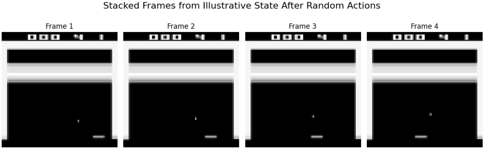
Fig. 4.14 Stacked frames forming a “visual state”. Generated by Gemini.#
4.7.4. CNN Arquitecture#
As a result, the CNN maps \(k\) consecutive frames of the game (encoding \(s\)) to \(n\) actions. in Atari Breakout \(n=4\) since we have the following actions:
Therefore, the CNN arquitecture (named DQN) is quite straight (several 2D Convolutions of increasing filters (each one followed by a ReLU), a flatteing followed by some full-connected networks or Perceptrons and one final layer with \(n=4\) features encoding the for the input states Q-values):
DQN(
(conv1): Conv2d(4, 32, kernel_size=(8, 8), stride=(4, 4))
(conv2): Conv2d(32, 64, kernel_size=(4, 4), stride=(2, 2))
(conv3): Conv2d(64, 64, kernel_size=(3, 3), stride=(1, 1))
(fc1): Linear(in_features=3136, out_features=512, bias=True)
(fc2): Linear(in_features=512, out_features=4, bias=True)
)
whose computational graph in Pytorch is in Fig. 4.15
{kind=link}
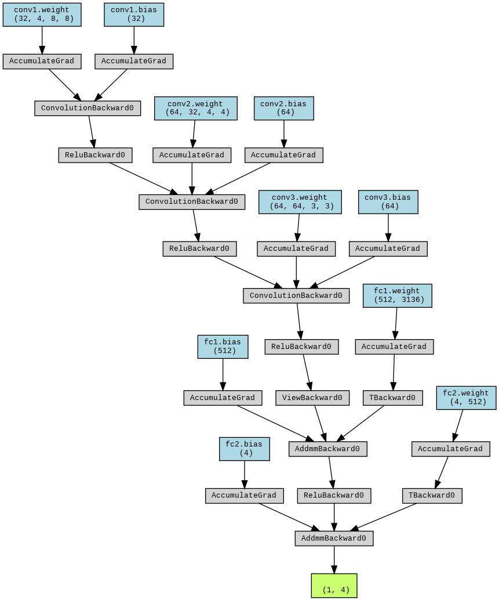
Fig. 4.15 CNN architecture for the Atari Breakout game. Generated by Gemini.#
Note that the first \(4\) features in the first \(\text{Conv2d}\) correspond to the \(k=4\) frames and the last \(4\) features (\(\text{out_features}\)) in \(\text{fc2}\) correspond to \(n=4\) actions.
4.7.5. Experience Replay#
This is another element of Deep Q-Learning.Experience replay relies on collecting a buffer of \(N\) tuples \((s,a,r,s',\text{done})\) and then take a mini-batch of random samples from it.
The motivation of this technique is as follows. Feeding the network \(\Theta\) with chains of tuples \((s,a,r,s',\text{done})\) leads to a poor use of data and slow learning. Remember that Stochastic Gradient Descent (SGD) operates on groups of I/O pairs the get an average gradient direction. Experience Replay is aligned with SGD as well as it produces an additional source of decorrelation.
{kind=link}
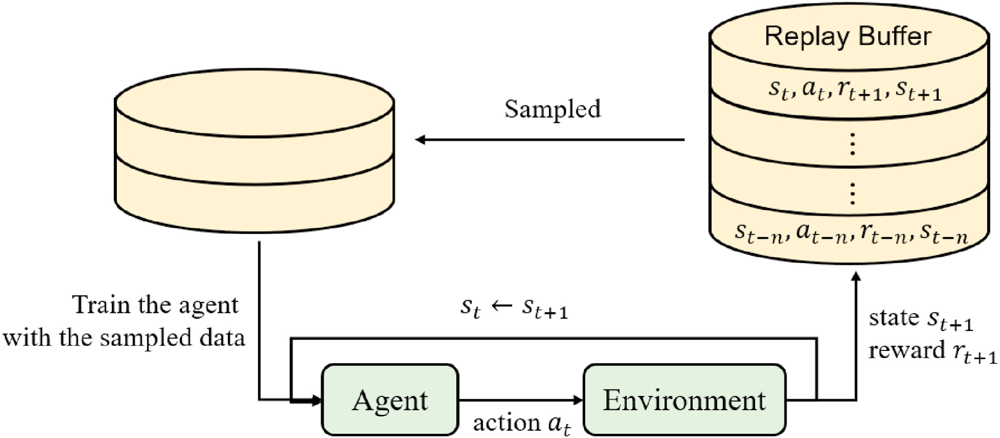
Fig. 4.16 Experience reply role in Deep Q-Learning. Credit.#
Note that, as the data in the mini-batch may come from states taken long ago, experience replay is NOT ALIGNED with On-policy methods such as SARSA.
4.7.6. Policy vs Target Network#
The ‘vanilla’ DQN has a unique network for predicting \(\hat{Q}_{\pi}\) and then update
where \(\Theta\) denotes the parameters of the so called policy network. However, DQN also maintains another network, known as target network, which is structurally identical to the policy network.
Therefore, we have
where \(\Theta^{-}\) are the weights of the target network. These weights are initially random and they are copied from \(\Theta\) every \(C\) number of updates.
Why? Let us see:
Sequence of optimizations. Formally using the target network as an ‘old version’ of the policy network leads to a sequence of optimization problems (once per stage where such old version is kept constant).
Stability. This modification makes the algorithm more stable compared to standard online Q-learning, where an update that increases \(Q_{\pi}(s,a)\) often also increases \(Q_{\pi}(s',a')\) for all actions and hence also increases the target, possibly leading to oscillations or divergence of the policy. Note that the target network is kept temporarily constant.
4.7.7. Overall Model#
Taking all the above considerations together, the DQN algorithm proceeds as follows. Herein, we use the version introduced in the Nature paper Human-level control through deep reinforcement learning:
Algorithm 4.7 (DQN)
Inputs Episodes \(K\), times per episode \(T\), \(\gamma\) discount factor, \(\epsilon_{min}\), \(\epsilon_{decay}\)
Output \(\epsilon-\)Greedy Deep Q-Learning \(Q_{\pi\ast}\)
Initialize. Replay buffer \({\cal D}\) to capacity \(N\), action-value function \(Q\) with random weights \(\Theta\), action value function \(\hat{Q}\) with weights \(\Theta^{-}=\Theta\) .
for episode \(i\):
Initialize sequence \(s_1=\{\mathbf{x}_1\}\) and pre-processed sequence \(\phi_1=\phi(s_1)\)
for \(t=\{1,\ldots,T\}\)
With probability \(\epsilon\) select a random action \(a_t\)
Othwerwise select \(a_t = \arg\max_{a}Q(\phi(s_t),a;\Theta)\)
Execute \(a_t\) in the emulator and observe reward \(r_{t+1}\) and image \(\mathbf{x}_{t+1}\)
Set \(s_{t+1}=(s_t,a_t,\mathbf{x}_{t+1})\) and pre-process \(\phi(s_{t+1})\)
Store transition \((\phi_t,a_t,r_{t+1},\phi_{t+1})\) in \({\cal D}\)
Sample random mini-batch of transitions \((\phi_j,a_j,r_{j+1},\phi_{j+1})\) from \({\cal D}\)
Set \(y_j = \begin{cases} r_{j+1} &\;\text{if}\;\text{episode terminates at step}\; j+1 \\[2ex] r_{j+1} + \gamma\cdot\max_{a'}\hat{Q}(\phi_{j+1},a';\Theta^{-}) &\;\text{otherwise}\;.\\[2ex] \end{cases}\)
Perform gradient descent step on \(\left(y_j-Q(\phi_j,a_j\;\Theta)\right)^2\) wrt parameters \(\Theta\)
Every \(C\) steps reset \(\hat{Q}=Q\) (trasfer parameters \(\Theta^{-}\leftarrow \Theta\))
\(\epsilon = \max(\epsilon_{min}, \epsilon\cdot \epsilon_{decay})\)
\(i = i + 1\)
return \(Q_{\pi\ast}\)
In order to monitorize the training performance of DQN, we register the moving average (mean of the \(50\) previous episodes) as we show in Fig. 4.17
{kind=link}
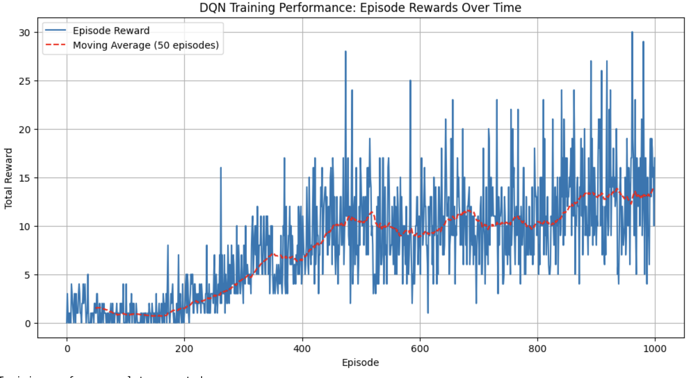
Fig. 4.17 Experience reply role in Deep Q-Learning. Generated by Gemini.#
Note that the agent’s moving average increases, sometimes decreases, but on average improves with time. The large oscillations show that there is still room for improvement.